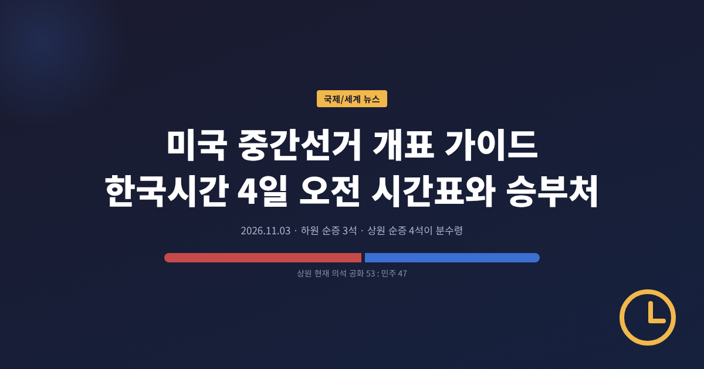
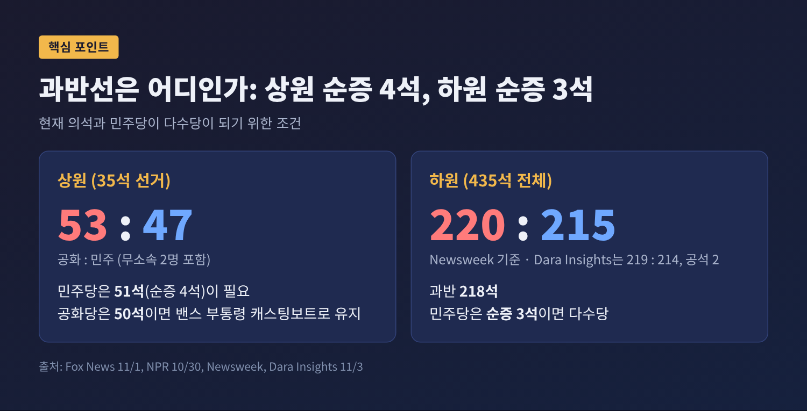
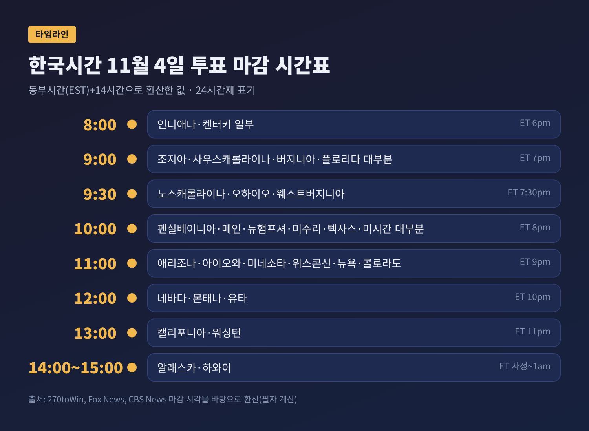
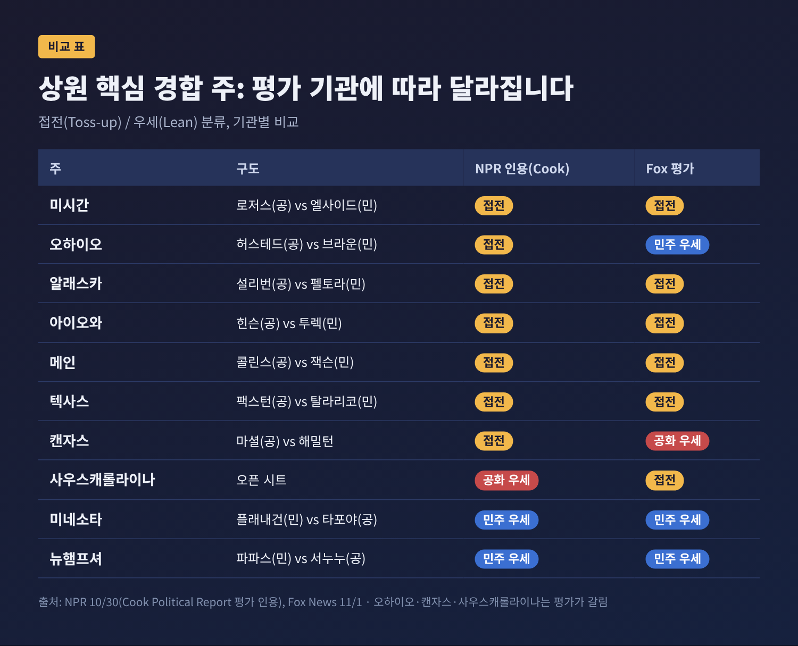
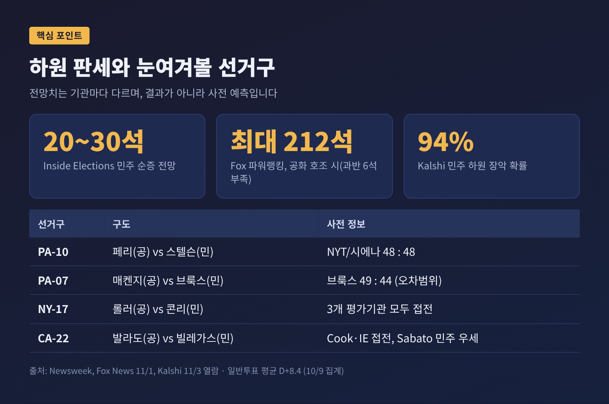
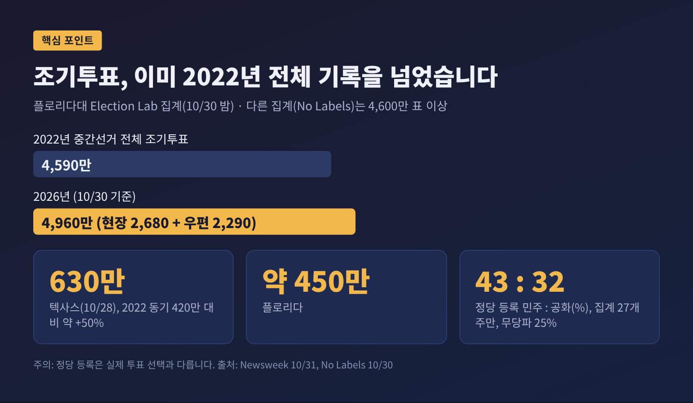
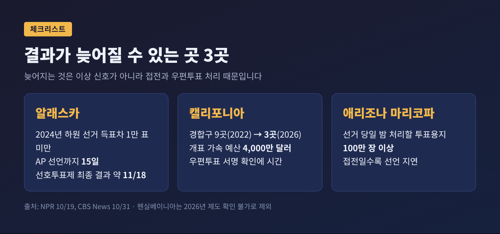

오늘은 미국 중간선거 투표일에 대해 이야기해 보려 합니다. 한국시간으로는 11월 4일 오전부터 첫 결과가 나오기 시작합니다. 이번 글은 결과를 예측하는 글이 아닙니다. 개표를 어떤 순서로 보면 좋은지, 어디가 늦어질 수 있는지, 확인된 사전 정보가 무엇을 말하는지를 정리한 안내서입니다.
3줄 요약
미국은 현지 시각 11월 3일 화요일, 연방 하원 435석 전체와 상원 35석을 새로 뽑습니다. 상원 35석은 정규 33석에 플로리다·오하이오 보궐선거 2석을 더한 숫자입니다. 주지사 선거와 주민투표도 함께 열립니다.
주지사 선거가 몇 개 주에서 열리는지는 매체마다 다릅니다. Fox News는 36개 주, CBS News는 39개 주로 전합니다. 집계 방식의 차이로 보이지만, 확인된 이유는 없으므로 숫자는 병기만 해 두겠습니다.
지금 의석은 어떻게 나뉘어 있을까요. 상원은 공화당 53석, 민주당 47석(무소속 2명 포함)입니다. 하원은 보도에 따라 공화 220 대 민주 215(Newsweek), 또는 공화 219 대 민주 214에 공석 2석(Dara Insights)으로 1석 차이가 납니다. 두 소스가 일치하는 지점은 과반선입니다. 하원 과반은 218석이고, 민주당은 순증 3석이면 다수당이 됩니다.

상원은 계산이 조금 다릅니다. 공화당은 50석만 지켜도 JD 밴스 부통령의 캐스팅보트로 다수당 지위를 유지합니다. 그래서 민주당은 51석, 즉 순증 4석이 필요합니다.
중간선거는 집권 2년 차 대통령에 대한 중간평가입니다. 하원이 넘어가면 민주당이 소환장 권한을 얻습니다. 로펌 King & Spalding은 7월 분석에서 이 경우 행정부와 민간 기업을 향한 조사가 늘어날 것으로 내다봤습니다. 거론되는 분야는 기술·AI, 제약, 석유·가스, 미디어, 물가입니다. 짐 래스킨 의원의 법사위원장 가능성도 거론되지만 확정된 사안은 아닙니다.
시장 쪽 해석도 있습니다. 분석 매체 Dara Insights는 분점 정부가 교착을 뜻하고, 채권시장의 위험은 2027년 부채한도와 셧다운 협상으로 옮겨갈 수 있다고 봅니다. 적자 때문에 승자와 무관하게 장기금리가 오를 수 있다는 지적도 덧붙였습니다. 같은 글은 S&P500이 과거 중간선거 후 6개월간 평균 14.1% 올랐다는 통계를 인용합니다. 이는 과거 평균일 뿐, 이번에도 그렇다는 보장은 아닙니다.
이 지점에서 한 가지는 분명히 해 두고 싶습니다. 위의 시나리오는 민주당이 이긴다는 가정 위에 서 있습니다. 결과가 나오기 전까지는 어느 쪽도 확정이 아닙니다.
미국 동부시간은 11월 1일 일광절약시간이 끝나 한국보다 14시간 늦습니다. 동부 오후 7시가 한국 11월 4일 오전 9시입니다. 아래 환산은 270toWin, Fox News, CBS News의 마감 시각을 바탕으로 제가 계산한 값입니다.

관전 순서는 이렇게 잡으면 편합니다.
참고로 Fox News 기사는 오후 9시 항목에 'PT'라는 표기를 붙였는데, 다른 항목은 모두 동부시간(ET)이었습니다. 270toWin과 CBS 표기를 근거로 동부시간 9시로 보정했습니다.
NPR이 10월 30일 Cook Political Report 평가를 인용해 정리한 접전 주는 다음과 같습니다. Fox News의 자체 평가와 다른 곳도 있어 함께 놓았습니다.

눈여겨볼 곳은 세 군데입니다.
텍사스. 콘린 의원이 예선에서 졌고, 공화당은 켄 팩스턴, 민주당은 제임스 탈라리코를 내세웠습니다. NPR은 탈라리코가 거의 모든 여론조사에서 앞서지만 오차범위 안이라고 전합니다. 예선 이후 지출이 5억 달러를 넘었습니다. 텍사스 상원 의석이 접전으로 분류된다는 사실 자체가 이번 선거의 성격을 말해 줍니다.
미시간. 피터스 의원의 은퇴로 비어 있는 민주당 의석입니다. 공화당은 마이크 로저스를 내세워 이곳을 가장 유력한 탈환 기회로 봅니다. 민주당은 압둘 엘사이드가 나섭니다.
알래스카. 댄 설리번 의원과 메리 펠토라가 맞붙습니다. 펠토라가 우세로 보였지만 캠프 관련 인물 영입 논란이 변수로 지적됩니다. 개표가 가장 늦게 끝날 수 있는 곳이기도 합니다.
오하이오, 캔자스, 사우스캐롤라이나는 평가가 갈립니다. 오하이오는 NPR(Cook)이 '접전', Fox가 '민주 우세'로 분류했고, 캔자스는 '접전'과 '공화 우세'로 나뉩니다. 평가 기관이 다르면 같은 선거구도 다르게 읽힙니다. 한쪽 평가만 믿지 않는 편이 안전합니다.
Fox 파워랭킹의 범위는 민주당 최대 54석에서 공화당 최대 52석까지입니다. 폭이 넓다는 것 자체가 불확실성의 크기를 보여줍니다. 또 하나의 변수는 네브래스카입니다. 민주당이 후보를 내지 않았고, 무소속 댄 오스본 후보는 어느 당과도 연대하지 않을 것으로 예상됩니다. 이 의석은 과반 계산을 복잡하게 만들 수 있습니다.
하원은 판세가 상대적으로 선명합니다. Fox 파워랭킹은 공화당이 잘 풀려도 최대 212석으로, 과반에 6석 모자란다고 봅니다. 민주당은 최대 240석까지 가능하다고 합니다. Inside Elections는 민주당 순증 20~30석을 예상하고, Sabato's Crystal Ball의 카일 콘딕은 공화당의 하원 수성을 "엄청난 충격"이라고 표현했습니다. 시장 쪽 숫자도 비슷합니다. Kalshi는 민주당 하원 장악 확률을 94%로 제시합니다.
배경에는 일반투표 지지율이 있습니다. 10월 초 집계에서 민주당 50.3%, 공화당 41.9%로 평균 8.4%포인트 차이였습니다. 다만 이것은 전국 평균이고, 의석은 선거구 단위로 갈립니다.

Newsweek이 꼽은 핵심 10곳 가운데 눈에 띄는 곳은 펜실베이니아 10선거구입니다. 스콧 페리 의원과 재닛 스텔슨 후보가 NYT/시에나 조사에서 48 대 48이었습니다. 같은 주 7선거구에서는 밥 브룩스 후보가 49%로 라이언 매켄지 의원(44%)을 앞섰으나 오차범위 안입니다. 뉴욕 17선거구는 세 평가기관이 모두 접전으로 분류했습니다.
판을 흔들 변수도 있습니다. 텍사스, 미주리, 노스캐롤라이나, 오하이오, 유타 등에서 선거구가 다시 그려졌고, 캘리포니아는 주민투표(Prop 50)로 지도가 바뀌었습니다. 연방대법원이 투표권법을 다룬 루이지애나 대 칼레이 사건에서 법을 약화시키는 판단을 내린다면, 뉴욕타임스는 최대 12석이 민주당에서 공화당으로 넘어갈 수 있다고 추산했습니다. 이는 선거 이후의 가정입니다.
예전 중간선거는 선거일 당일 투표소에 줄을 서는 풍경이 중심이었습니다. 지금은 달라졌습니다. 플로리다대 Election Lab 집계(10월 30일 밤)로 조기투표는 4,960만 표입니다. 현장 2,680만 표, 우편 2,290만 표입니다. 2022년 중간선거 전체 조기투표 기록(4,590만 표)을 선거 나흘 전에 넘어섰습니다.
다른 집계는 숫자가 다릅니다. No Labels는 같은 날 4,600만 표 이상으로 전했습니다. 집계 시각과 추적 기관이 달라서 생긴 차이로 보입니다. 정확한 값보다 2022년 기록을 넘었다는 방향이 두 곳에서 일치합니다.

주별로는 텍사스가 10월 28일 기준 630만 표로, 2022년 같은 시점 420만 표보다 약 50% 많았습니다. 사우스캐롤라이나는 83%, 메인은 44%, 미시간과 캔자스는 30% 이상 늘었습니다.
정당 등록을 집계하는 27개 주만 놓고 보면 민주 43%, 공화 32%, 무당파·기타 25%입니다. 그렇다고 민주당이 이긴다는 뜻은 아닙니다. 등록 정당은 실제로 누구에게 투표했는지와 같지 않습니다. 전문가 해석도 갈립니다. 마이클 맥도널드는 총투표율이 2018년에 필적할 수 있다고 봅니다. 찰스 스튜어트는 선거일 투표자가 조기투표로 옮겨왔을 뿐이라고 반론합니다. 해리스 카운티는 2018년에도 조기투표 기록을 세웠지만 민주당은 텍사스 전체에서 졌습니다.
균형을 위해 반대편 논거도 짚어야 합니다. 공화당 전략가들은 여론조사가 트럼프 지지층을 과소 추정해 왔다고 말합니다. 2016년, 2020년, 2024년이 근거로 제시됩니다. 전 NRSC 보좌관 매트 휘틀록은 공화 유권자가 조사에 잘 응하지 않는 점을 지적했습니다. 공화당 여론조사원 패트릭 러피니는 2018~2024년 아이오와·미시간·오하이오 조사가 민주당 상원 후보를 과대 추정했다고 분석했고, 워싱턴포스트는 평균 6.2%포인트로 집계했습니다.
반대로 민주당 쪽은 일반투표 8%포인트 안팎 격차, 그리고 집권당이 중간선거에서 의석을 잃는 역사적 경향을 근거로 듭니다. 같은 기사는 퓨리서치 10월 8일 조사에서 트럼프 대통령 지지율이 30%였다고 소개합니다. 다만 이는 단일 기사가 인용한 수치이므로 참고로만 보시기 바랍니다.
어느 쪽이 맞는지는 오늘 밤 숫자가 말해 줄 것입니다. 지금 확정적으로 말할 수 있는 사람은 없습니다.
개표가 늦어지는 것과 문제가 있는 것은 다른 이야기입니다. NPR(10월 19일)은 가장 큰 이유로 득표 차이를 꼽습니다. 표 차이가 작을수록 AP 등 언론사가 승자를 선언하기까지 더 많은 데이터가 필요합니다. 우편투표는 봉투를 열고 서명을 확인해야 해서 현장 투표보다 오래 걸립니다. 일부 카운티에서는 우편투표의 최대 절반이 선거일에 도착해 처리가 뒤로 밀립니다.

주의해서 볼 곳은 세 곳입니다.
한 가지 덧붙입니다. 펜실베이니아의 개표 지연 설명으로 흔히 인용되는 자료는 2022년 기사입니다. 2026년에 제도가 바뀌었는지는 이번 조사에서 확인하지 못했습니다. 그래서 이 글은 펜실베이니아의 지연 여부를 단정하지 않습니다.
한국에서는 11월 4일 오전부터 정오 사이에 핵심 주 결과가 쏟아집니다. 출근길에 첫 윤곽이 보이고, 점심 무렵이면 상원 향방의 단서가 나올 수 있습니다. 다만 접전 주가 많아 "4일 아침에 모든 게 정해진다"고 기대하기는 어렵습니다. 알래스카 같은 곳은 며칠, 길게는 2주 이상 걸릴 수 있습니다.
시장과 정책 쪽에서는 두 가지를 눈여겨볼 만합니다. 하나는 하원 주도권이 바뀔 경우 2027년 예산·부채한도 협상이 힘겨워질 수 있다는 점입니다. 다른 하나는 선거 이후 이란 공습 재검토 보도가 나오고 있어 유가가 변수라는 분석입니다. 미국 휘발유 가격은 갤런당 4.28달러로 전해집니다. 이 두 가지는 모두 단일 분석 매체의 전망이어서, 확정된 사실이 아니라 시나리오로 보시길 권합니다.
정리하면 이렇습니다. 하원은 민주당 우세, 상원은 접전이라는 사전 정보가 가장 널리 공유되어 있습니다. 반면 공화당은 여론조사의 한계를 짚으며 반전을 기대합니다. 어느 쪽 설명이든 오늘 밤 개표가 시작되기 전까지는 전망일 뿐입니다.
"숫자는 늦게 나와도, 틀리게 나오는 것은 아닙니다."
개표창 앞에서 조급해지신다면 이 글의 시간표를 한 번 펼쳐 보시기 바랍니다. 어느 주가 언제 닫히는지 알고 있으면, 늦어지는 시간도 한결 담담하게 기다릴 수 있을 것입니다.
참고 자료: Fox News(11/1), CBS News(10/31), 270toWin, NPR(10/30, 10/19), Newsweek(10/31 외), No Labels(10/30), voz.us(10/28), National Security Journal(10/15), King & Spalding(7/15), Dara Insights(11/3), Wikipedia, Kalshi